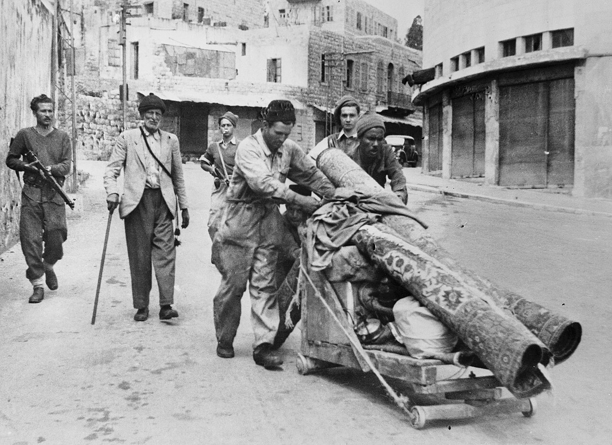
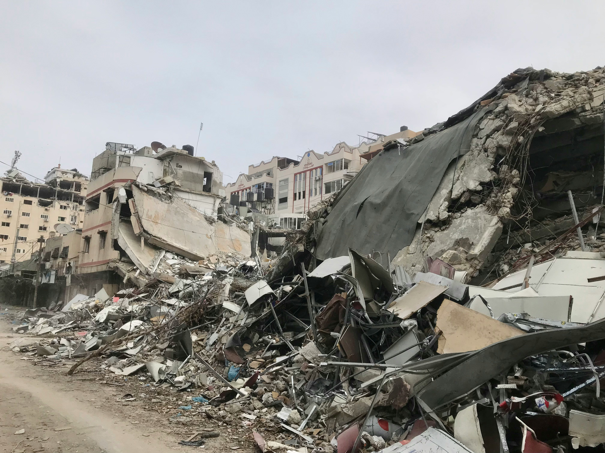
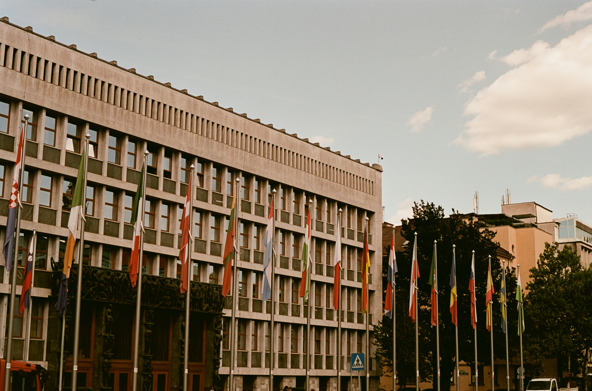

Historical Context
To understand the current crisis, one must look at the systematic events that shaped the Gaza Strip over the last 76 years.
The Nakba refers to the mass displacement of Palestinians during the 1948 Arab-Israeli war. It fundamentally altered the demographics of Gaza.
- Displacement: Approximately 750,000 Palestinians were expelled from their homes. About 200,000 refugees fled specifically to the Gaza Strip, overwhelming the local population.
- Refugee Camps: Eight major refugee camps (including Jabalia, Beach Camp, and Rafah) were established by UNRWA to house this influx. These "temporary" camps exist to this day.
- Population Density: The sudden influx transformed Gaza into one of the most densely populated areas on Earth almost overnight.

During the Six-Day War, Israel captured the Gaza Strip from Egyptian administration, bringing it under direct military occupation.
- Settlements: Following the occupation, Israel built 21 settlements inside Gaza (Gush Katif block), appropriating significant agricultural land and water resources. These were evacuated in 2005 ("The Disengagement"), but control over borders remained.
- Economic Dependence: The occupation created a structural dependence of Gaza's economy on Israel, limiting independent trade.
- Military Administration: A system of permits and checkpoints was established, restricting movement for decades.

Following the election of Hamas, Israel imposed a comprehensive land, air, and sea blockade. The UN has described this as "collective punishment."
- "De-development": The blockade caused the collapse of the economy. By 2022, unemployment reached 47%, one of the highest in the world.
- Import Restrictions: "Dual-use" items (including construction materials and medical equipment) were banned.
- Food Insecurity: Even before 2023, 80% of the population relied on international humanitarian aid to survive.
Following the October 7 attacks, Israel launched a massive offensive. The scale of destruction has been described as "domicide" (destruction of homes).
- Infrastructure: Over 60% of all housing units have been destroyed or damaged.
- Displacement: 1.9 million people (85% of the population) were forced to flee, many multiple times.
- Healthcare Collapse: 33 out of 36 hospitals were rendered non-functional due to raids or lack of fuel.

South Africa brought a case against Israel at the International Court of Justice (ICJ).
- The Ruling: The ICJ found it "plausible" that Israel's acts could amount to genocide.
- Provisional Measures: The court ordered Israel to take immediate steps to prevent genocide and ensure the delivery of urgent humanitarian aid.
- International Reaction: The ruling marked a turning point in legal accountability, although aid obstruction continued.
